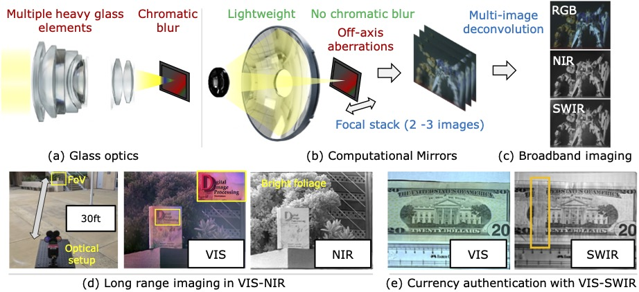
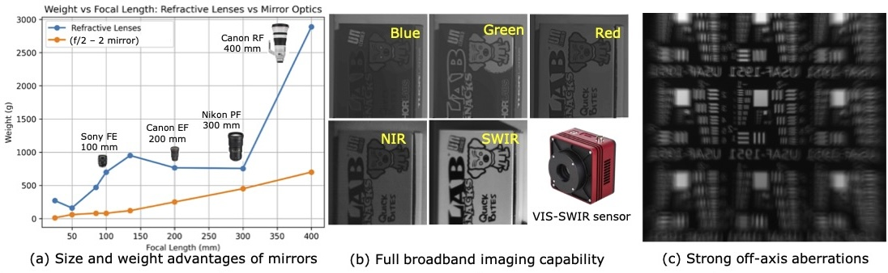
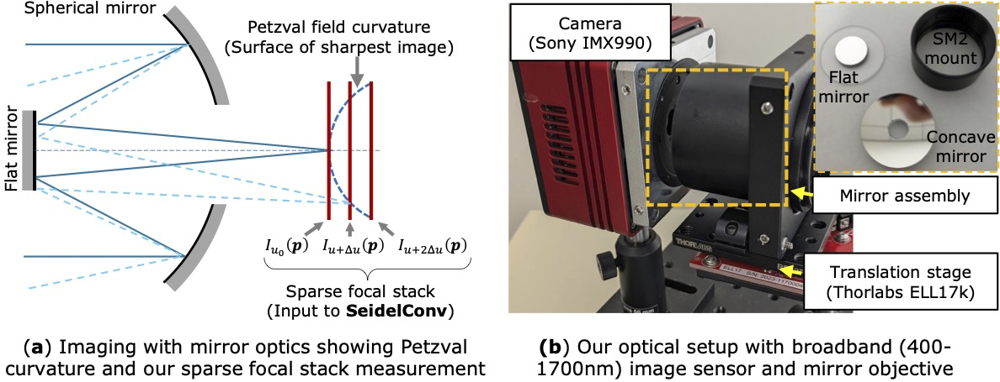
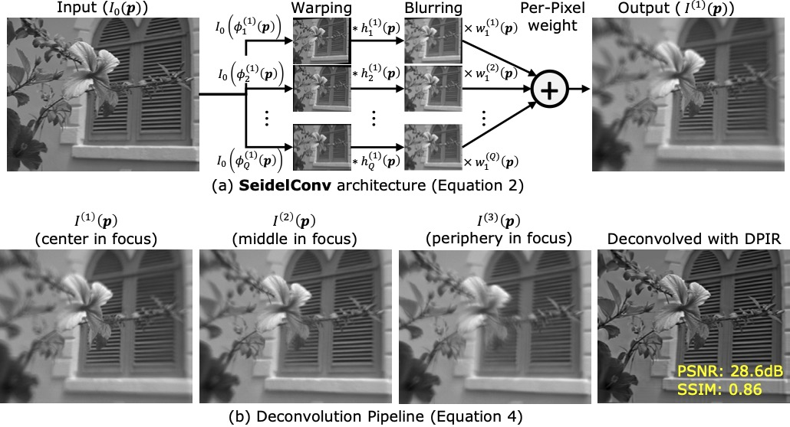
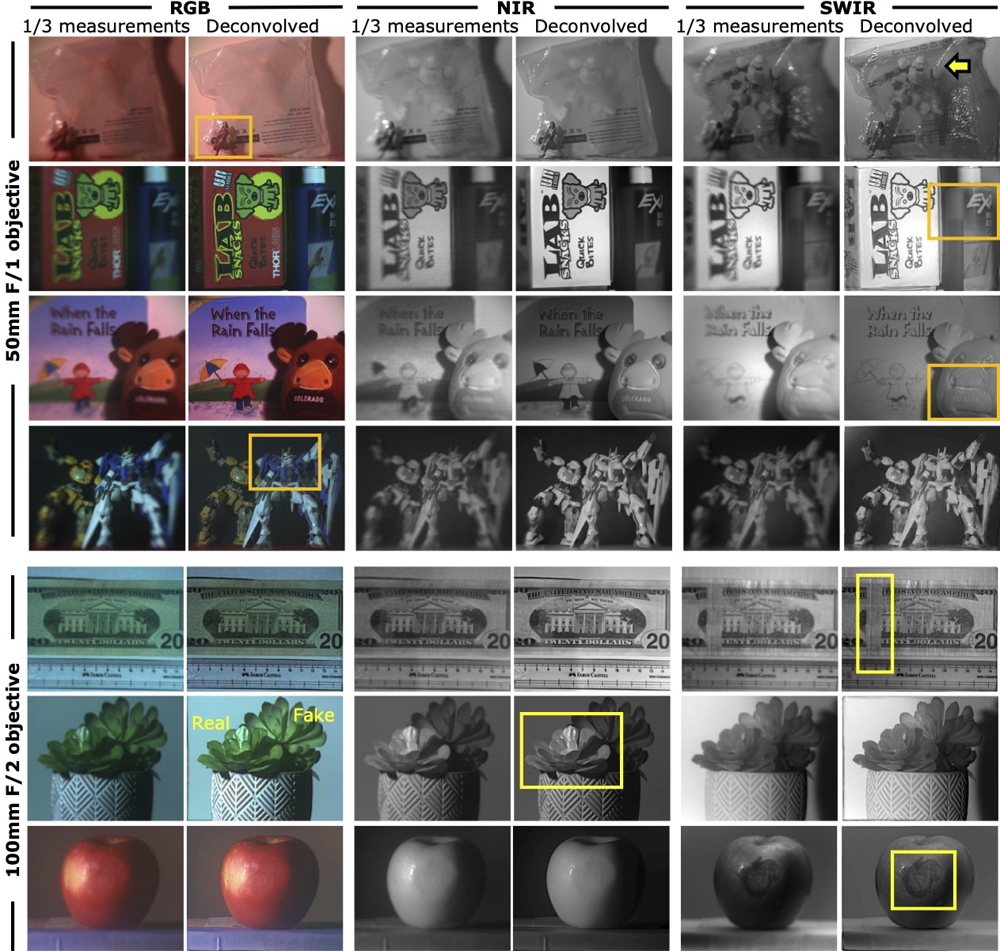
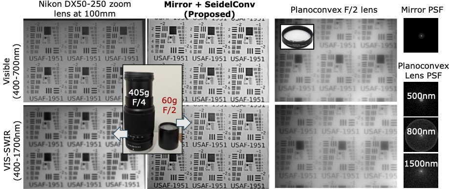
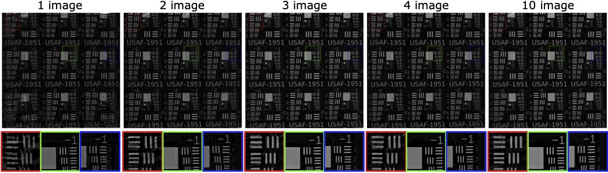

Sensors capable of imaging from the visible through the shortwave-infrared (VIS-SWIR, 400–1700nm) are increasingly common, but the optics that focus this light are not. Refractive lenses suffer from chromatic aberration — different wavelengths focus at different depths — and correcting for it across such a wide band typically requires bulky, multi-element, expensive assemblies. Mirrors are inherently achromatic and would seem to be the obvious fix, but simple one- or two-element mirror objectives suffer from severe off-axis aberrations and Petzval field curvature: the sharply-focused surface is curved, not flat, so a flat sensor can never capture the whole field of view in focus at once. This has historically confined mirror-based imaging to narrow fields of view or very slow apertures.
We introduce Computational Mirrors, a practical pipeline that pairs hardware-controlled focal-stack acquisition with a physics-motivated forward model and multi-image reconstruction. A minimal focal stack of 2–4 images, captured by sweeping the sensor along the optical axis, ensures every point in the field of view is sampled near its own focus. To undo the remaining spatially-varying blur, we propose SeidelConv, a learned point-spread-function model inspired by classical Seidel aberration theory, which represents each local PSF as a weighted mixture of affine-warped, blurred copies of the image. Folding SeidelConv into a plug-and-play reconstruction framework recovers a single sharp, all-in-focus image from the sparse stack. We validate the approach with f/1 50mm and f/2 100mm prototypes built from off-the-shelf concave mirrors and a Sony IMX990 VIS-SWIR sensor, demonstrating sharp imaging across RGB, NIR, and SWIR with a single focus setting and no wavelength-dependent calibration — the first demonstration of high-aperture (f/1), ultra-broadband imaging with simple reflective optics.
Mirrors are light and achromatic — but only computation can give them a usable field of view.

| Approach | Light & compact | Broadband | Full FoV |
|---|---|---|---|
| Refractive optics | ✕ | ✕ | ✓ |
| Reflective optics | ✓ | ✓ | ✕ |
| Computational Mirrors + SeidelConv | ✓ | ✓ | ✓ |
Our objective mimics the form factor of a conventional lens: a primary concave mirror focuses light through a central aperture, redirected by a secondary flat fold mirror to keep the assembly compact. The sensor sits on a motorized linear translation stage (Thorlabs ELL17k) aligned with the optical axis. On-axis and off-axis regions of the scene reach focus at different depths because of Petzval curvature, so translating the sensor samples the curved focal surface directly. Prior work required dense stacks of 20–30 images to cover this volume; we found that three images are enough to bring every point in the field of view near its own focus at least once, after which reconstruction quality plateaus.

Off-axis blur in a few-mirror system comes from coma, astigmatism, and spherical aberration — the classical Seidel aberrations. These distortions stretch and rotate the point-spread function as it moves away from the optical axis, in ways that patch-wise convolution or low-order eigen-decompositions struggle to capture, especially once real mechanical misalignment breaks the textbook radial symmetry. SeidelConv instead represents the k-th focal-stack image as a mixture of Q warped, blurred, and re-weighted copies of the latent sharp image:
\[ I^{(k)}(\mathbf{p}) = \sum_{q=1}^{Q} w_q^{(k)}(\mathbf{p})\; I_0\!\big(\phi_q^{(k)}(\mathbf{p})\big) * h_q^{(k)}(\mathbf{p}), \qquad \phi_q^{(k)}(\mathbf{p}) = R_q^{(k)}\mathbf{p} + \mathbf{t}_q^{(k)} \]
where each term has its own learned affine warp \(\phi_q^{(k)}\), blur kernel \(h_q^{(k)}\), and per-pixel weight \(w_q^{(k)}\). The affine warp is the key addition over prior spatially-varying convolution models (e.g. CoordGate): it gives the model a geometric degree of freedom to mimic the stretching and rotation that coma and astigmatism actually produce off-axis. Parameters are calibrated once, monitor-to-sensor, by displaying random dot patterns and fitting with stochastic gradient descent — after which the same model works for any subject distance.

Recovering the latent sharp image \(I_0\) from the calibrated stack is then a small multi-image inverse problem,
\[ \min_{I_0(\mathbf{p})}\; \sum_{k=1}^{N} \big\| \mathcal{A}^{(k)}(I_0(\mathbf{p})) - I^{(k)}(\mathbf{p}) \big\|_2^2 \;+\; \lambda\, \mathcal{R}(I_0(\mathbf{p})), \]
solved with a plug-and-play deep denoiser prior \(\mathcal{R}(\cdot)\) (DPIR), which we found to outperform total-variation, deep-image-prior, and implicit-neural-representation alternatives in our ablations.
Real captures with f/1 50mm and f/2 100mm prototypes, deconvolved from a 3-image focal stack.



Both objectives were built from off-the-shelf parts for well under $1,000 in optics.
Edmund Optics #43-470 concave mirror · 200µm axial step · optimal for scenes at close-to-moderate range · strongest field curvature of the two prototypes.
Edmund Optics #43-841 concave mirror · 100µm axial step · used for long-range capture (objects 6–10ft away) · lower field curvature, fewer focal-stack images needed.
Sony IMX990 VIS-SWIR sensor (400–1700nm), binned to 512×640 · Thorlabs ELL17k translation stage (180mm/s, 20µm steps).
Q = 31 affine + blur terms, 11×11 kernels, PyTorch, calibrated from L = 10 monitor-displayed dot patterns per axial setting.
We will release a 100-image calibration dataset (captured from the DIV2K validation set on our optical setup, with both 50mm and 100mm objectives) along with the SeidelConv implementation, to support further research on mirror-based computational imaging.